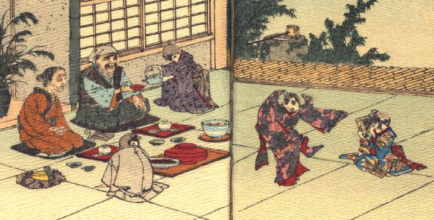

老夫婦をもてなす雀たち。ご馳走を並べて、老人に酒を勧めている。娘らしき雀たちが、1体は鼓を打ち、もう1体はそれにあわせて踊っている。
出典：親書誌：U426_nichibunken_0109：Le moineau qui a la langue coupée／日付：2006／資源識別子：U426_nichibunken_0109_0004_0000
Copyright (c)2010- International Research Center for Japanese Studies, Kyoto, Japan. All rights reserved.